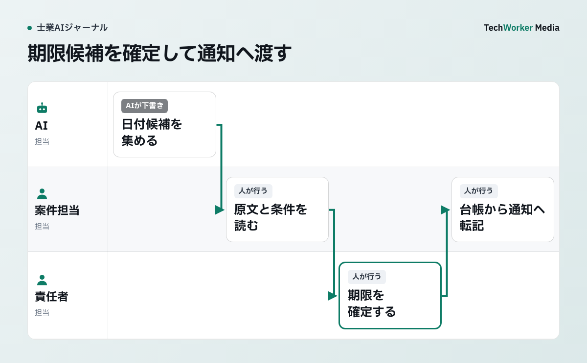

生成AIは、期限管理のどこまでを任せられますか？
任せられるのは、期限の候補集めまでです。確定は、原文を読んだ担当者と有資格者が行います。
士業事務所で生成AIを期限管理に使うなら、役割はメールや通知文、面談記録から日付候補を集めるところまでです。法的な期限を、AIに確定させてはいけません。
次の判断は、原文と案件の事情を読まなければできないためです。
- 起算点
- 休日の扱い
- 条件付きの期日
- 最新の変更通知
担当者が原文を確認し、必要に応じて有資格者や案件責任者が確定します。その後で、案件台帳と共有カレンダーへ登録します。
Microsoftの公式サポートには、Copilot Chatへの依頼例があります。文書中の重要日付や、メッセージ内の成果物、期限、作業項目を挙げさせる例です。
対応するCopilotの追加ライセンスと権限がある環境が前提です[1]。
一方、同社はCopilotが作る会議メモに注意を促しています。AI生成内容は誤る場合があるため、結果を確認するよう求めています[2]。
両方を読んで業務へ落とすことが、期限管理の出発点です。
期限管理は、どんな手順で進めますか？
入力前の確認、候補表、原文確認と台帳登録、例外一覧、効果測定の5つの手順で進めます。

通知文に「10月15日」とあっても、文書作成日なら提出期限として登録しません。候補表には原文の位置と日付の種類を残し、起算点や変更通知が不明なら「未確定」にします。台帳へ移すのは確認者が確定した行だけです。例外一覧が空でも、原文側から未登録の期限を探します。
- 入力前に、情報と利用環境を確認します。承認されていない無料サービスへは入れません。不要な情報は入力前に外します。
- 候補表の出力欄を分けます。日付だけを抜き出しても、期限管理にはなりません。
- 原文確認から台帳登録までを一本にします。確定した期限だけを、正本として登録します。
- 例外一覧で、漏れを見つけます。原文側から台帳を逆引きします。
- 小さく試して、効果を測ります。架空の通知文で、一巡を検証します。
手順1の対象は、顧客名、相談内容、申請資料、紛争や健康に関する情報を含む文書です。承認されていない無料サービスや、個人アカウントへ入れてはいけません。
個人情報保護委員会は、個人データを生成AIへの入力に含める場合の確認事項を注意喚起しています。利用目的の範囲と、提供者が入力を機械学習に使わないことなどです[4]。
点検する項目は、次の3つです。
- 事務所が契約・設定を確認した環境か
- 対象文書へ利用者が正当にアクセスできるか
- AI処理に不要な情報を除けるか
期限候補の抽出に氏名や詳細な相談経緯が不要なら、入力前に外します。
経済産業省・総務省のAI事業者ガイドライン第1.2版も、組織的な対応を扱っています。リスク管理、人間の関与、記録などです[5]。製品名だけで利用可否を決めません。文書、目的、操作、確認者を一組で決めます。
手順2では、日付は期限とは限らない点に気を付けます。「10月15日」という文字列を見つけても、その日付が何かは分かりません。
- 提出期限
- 顧客への回答予定
- 所内の確認日
- 単なる文書作成日
「通知を受けた日の翌日から」「資料がそろった場合」といった条件が付くこともあります。
AIの出力欄は、日付候補、期限の種類、起算点候補、条件、対象作業、担当候補、原文の位置、不明点に分けます。空欄で構いません。推測で埋めさせないためです。
英国Solicitors Regulation Authority（英国の弁護士規制機関）は、監督のあり方を示しています。主要な対応が記録され、案件が適切に進んでいるかを見るというものです[3]。日本の士業へそのまま適用される規則ではありません。
原文への参照と確認者を記録し、後任者が判断の経緯をたどれるようにする考え方は、手順を検討する材料になります。
手順3では、AIが候補表を出したら、担当者は各行から原文を開きます。日付、起算点、条件、対象作業、変更通知の有無を照合します。
判断できない行には「未確定」と記録します。法令、通達、裁判所や行政機関の通知が根拠なら、その原典も確認します。顧客への確認が必要な事実と、事務所内で判断する事項も分けます。
確定した期限は、案件台帳を正本として登録します。共有カレンダーには、通知用の情報を転記します。登録項目は、期限、対象作業、担当者、根拠文書の保存先、確定者、確認日、事前通知です。
不一致があれば、原文を再確認して台帳を確定します。カレンダーは台帳に合わせます。
即時確認の対象は、事務所規程で定義します。法定・裁判所期限、期限変更が届いた案件、残営業日が所定の閾値以下の案件などです。
これらはその場で、それ以外も翌営業日までに、別の担当者が突き合わせます。順序は「原文から台帳」「台帳からカレンダー」です。
期限変更が届いた場合は、旧記録を消さずに、変更前後、理由、確認者を残します。件数は、確定まで完了したものを数えます。AIが抽出した件数は管理の対象にしません。
手順4の日次確認では、次の案件を例外一覧にします。
- 原文への参照がない
- 確定者がいない
- 担当者が空欄
- 台帳にはあるがカレンダーにない
- 直近24時間で変更された
件数がゼロでも、安心できません。抜き取りで原文側から台帳を逆引きし、AIが候補自体を落としていないか確かめます。
米国法曹協会のFormal Opinion 512は、生成AIを使っても責任が残ると整理しています。能力、守秘、顧客との意思疎通、職員や外部提供者の監督です[6]。
これも日本の士業に直接適用される規則ではありません。AIを使った工程の最終責任を誰が持つか、外部サービスをどう監督するかを決める材料にはなります。
手順5の効果は、抽出件数では測りません。導入前後で、次の項目を測ります。
- 原文確認で棄却した候補
- 誤登録と重複登録
- 未登録の発見
- 変更反映までの時間
- 二次確認での差戻し
期限管理で、AIの導入がうまくいかないのはどんなときですか？
日付を期限と見なしたり、抽出件数を成果にしたりすると、誤登録や見落としにつながります。
- 日付をそのまま期限にします。種類、起算点、条件、原文の位置を分けないと、期限管理になりません。
- 無料サービスや個人アカウントへ入力します。契約・設定を確認した環境に限ります。
- 抽出件数を成果にします。誤登録と見落としで測ります。
- 操作だけを教えます。確認と記録の業務が決まっていなければ、運用は続きません。
Thomson Reutersは2025年に、法務、税務、会計など2,275人へ調査を行いました。46%がチーム内のスキル不足を報告し、主に技術とデータの能力が課題でした[7]。日本の士業を代表する値ではありません。
米国のMike Morse Law Firmには、導入事例があります。Microsoft 365 Copilotと情報保護の設定、社内推進者を組み合わせたものです[8]。
製品提供者が公開した顧客事例です。日本の小規模事務所で同じ結果が出る保証はありません。
AIの候補表、案件台帳、共有カレンダーの役割はどう分かれますか？
候補表は原文から集めた候補、案件台帳は確定した期限の正本、カレンダーは通知用の転記です。
| 名前 | 役割 | 主な項目 |
|---|---|---|
| AIの候補表 | 原文から日付の候補を集める。確定はしない | 日付候補、期限の種類、起算点候補、条件、対象作業、担当候補、原文の位置、不明点 |
| 案件台帳 | 確定した期限の正本 | 期限、対象作業、担当者、根拠文書の保存先、確定者、確認日、事前通知 |
| 共有カレンダー | 通知用の情報を転記する | 台帳から転記する。不一致があれば台帳に合わせる |
よくある質問
判定させてはいけません。起算点、休日の扱い、条件付きの期日、最新の変更通知は、原文と案件の事情を読まなければ判断できないためです。AIは候補を挙げるまでとし、担当者の確認と有資格者や案件責任者の確定を経て台帳へ登録します。
候補表の各行から原文を開き、日付、起算点、条件、対象作業、変更通知の有無を照合します。判断できない行には「未確定」と記録します。法令や通知が根拠なら、その原典も確認します。
原文確認で棄却した候補、誤登録、重複登録、未登録の発見、変更反映までの時間、二次確認での差戻しを測ります。抽出した件数は成果にしません。最初は架空の通知文とメールで一巡を試すのが安全です。
次の一歩は、何から始めればよいですか？
架空の通知文とメールで、候補抽出から例外確認までの一巡を小さく検証することから始めます。
まず、架空の通知文とメールで試します。候補抽出、原文確認、台帳への登録、カレンダーへの転記、例外確認の一巡を、小さく検証します。
実案件由来の資料へ進む場合は、再識別の可能性、契約・設定、アクセス権を別途確認します。
根拠資料
資料確認日：2026年9月26日。本文中の手順例は編集部の提案で、導入効果の実測値ではありません。